🎯 簡介
NuMonitor 是一款專為 Arduino/ESP32 開發者設計的 Serial Port 監控工具，提供比 Arduino IDE Serial Monitor 更強大的功能，包括即時數據視覺化、多種圖表類型、GPS 軌跡追蹤等進階功能。
終端機監控
即時顯示串口數據，支援自動捲動、時間戳記、URL 自動識別等功能
數據視覺化
支援 7 種圖表類型：折線圖、面積圖、柱狀圖、散點圖、圓餅圖、儀表圖、堆疊圖
GPS 軌跡追蹤
整合 OpenStreetMap 地圖，即時顯示 GPS 移動軌跡
多國語言
支援 18 種語言介面，自動偵測瀏覽器語言設定
💻 系統需求
瀏覽器支援
| 瀏覽器 | 最低版本 | 備註 |
|---|---|---|
| Google Chrome | 89+ | ✅ 推薦使用 |
| Microsoft Edge | 89+ | ✅ 完整支援 |
| Opera | 75+ | ✅ 完整支援 |
| Firefox | - | ❌ 不支援 Web Serial API |
| Safari | - | ❌ 不支援 Web Serial API |
NuMonitor 使用 Web Serial API，此 API 僅在 Chromium 核心的瀏覽器上支援。Firefox 和 Safari 目前尚未實作此功能。
硬體需求
- 支援 Serial Port 的裝置（Arduino、ESP32、ESP8266 等）
- USB 連接線
- 已安裝對應的 USB 驅動程式
🚀 快速開始
步驟 1：開啟 NuMonitor
直接在瀏覽器中開啟 ../NuMonitor4SerialPort.html 檔案即可使用，無需安裝。
步驟 2：連接裝置
- 將 Arduino/ESP32 透過 USB 連接到電腦
- 點擊「連線」按鈕（V26.1.0 起「連線」與「斷開」合併為同一顆按鈕）
- 第一次使用：會跳出瀏覽器的連接埠對話框，選擇對應的 COM Port
- 之後：直接連上次用過的埠，不再跳對話框
- 要換別的埠，點按鈕右側的「▾」箭頭，從清單挑選已授權的埠，或選「其他…（瀏覽器選單）」重新授權
- 連上後按鈕會變成綠色的「已連接」，外框緩慢呼吸發光，右側的挑埠箭頭會自動隱藏；把滑鼠移上去會轉紅並顯示「斷開」，按下即中斷連線
- 裝置突然斷線時，按鈕會轉成橘色的「連線中…」並加快呼吸，代表正在自動重連；此時按下按鈕＝取消重連
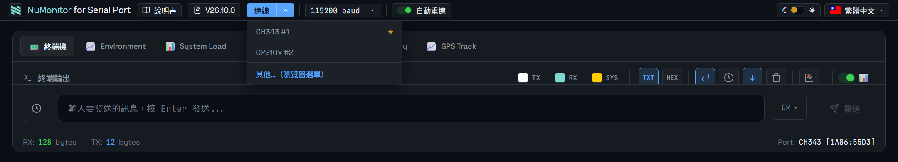
步驟 3：設定鮑率
點擊鮑率下拉選單，選擇與您 Arduino 程式中 Serial.begin() 設定相同的鮑率。常用的鮑率有：
9600- Arduino 預設值115200- ESP32 建議值250000- 高速傳輸
如果看到亂碼，通常是鮑率設定不正確。請確認與 Arduino 程式中的設定一致。
📟 終端機功能
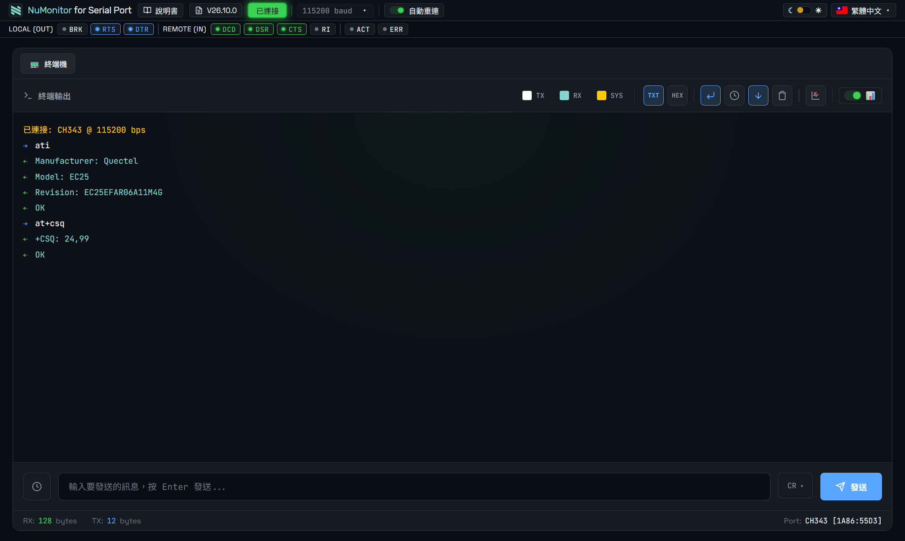
基本功能
| 功能 | 說明 |
|---|---|
| 自動捲動 | 新訊息進來時自動捲動到最底部 |
| 時間戳記 | 顯示每行訊息的接收時間 |
| 清除畫面 | 清空終端機所有內容 |
| 傳送指令 | 向裝置發送文字指令，按 Enter 或「發送」按鈕 |
| 指令歷史 | 輸入框左側的時鐘圖示可叫出歷史紀錄，重送或複製先前的指令 |
| 回顯（Echo） | 把自己送出的指令也顯示在畫面上，方便確認「到底有沒有送出去」 |
| TXT / HEX 模式 | 切換文字或十六進位顯示，除錯二進位協定時很有用 |
| 指令歷史 | 輸入框左側的時鐘圖示，可重送或複製先前送過的指令 |
| 顏色自訂 | TX／RX／SYS 三種訊息的顏色可各自調整，深淺主題分開記憶 |
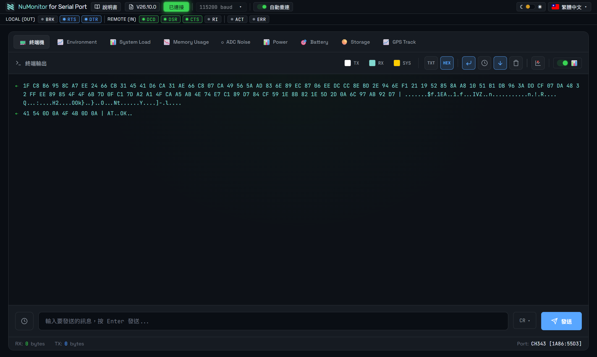
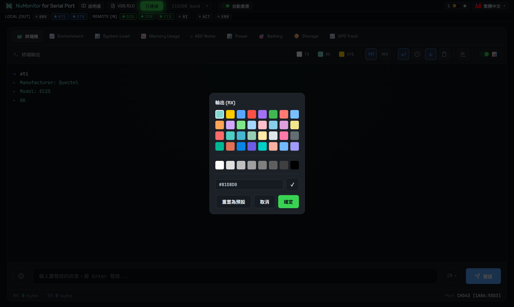
URL 自動識別
終端機會自動識別以下格式的 URL 並轉換為可點擊的連結：
https://開頭的網址http://開頭的網址www.開頭的網址（自動補上 https://）ftp://開頭的網址
行結尾設定
傳送指令時，可在輸入框右側選擇要附加的行結尾符號：
| 選項 | 送出的位元組 | 適用情境 |
|---|---|---|
| 無行尾 | （不附加） | 自行控制每個位元組時 |
| LF | \n（0x0A） |
Arduino / ESP32 的 Serial.readStringUntil('\n')，預設值 |
| CR | \r（0x0D） |
數據機 AT 指令、多數 CLI 韌體 |
| CRLF | \r\n |
Windows 風格的裝置、部分模組 |
⚠️ 接數據機（modem）請務必選 CR。 AT 指令集規定命令以回車（CR）結尾，若送成 LF 或不加行尾，數據機會一直等待結束符，完全不會回應——這不是連線失敗，而是命令根本沒被視為送出。
此設定會被記住，下次開啟頁面時自動還原（V26.10.0 起）。
🚦 RS-232 訊號狀態列
連線成功後，標題列下方會出現一排 RS-232 握手訊號燈；未連線時整列隱藏。
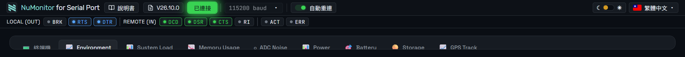
LOCAL (OUT) — 我方送出的訊號，可點擊切換
| 燈號 | 全名 | 說明 |
|---|---|---|
| BRK | Break | 送出中斷訊號。點一下開始、再點一下解除 |
| RTS | Request To Send | 請求傳送。硬體流控的裝置通常需要拉高 |
| DTR | Data Terminal Ready | 終端就緒。多數數據機要 DTR 為高才接受命令 |
為什麼一開始顯示為未亮？ 瀏覽器的 Web Serial API 只能「設定」輸出訊號，無法讀回目前狀態，所以連線後、你第一次點擊之前，程式並不知道實際值，一律顯示為未亮。
⚠️ 對 Arduino / ESP32 使用者的提醒： DTR 與 RTS 在多數開發板上接的是自動重置電路，切換它們可能導致板子重新開機。因此 NuMonitor 刻意不在連線時自動設定這兩個訊號，一切由你手動決定。
REMOTE (IN) — 對方送來的訊號，唯讀
| 燈號 | 全名 | 亮起代表 |
|---|---|---|
| DCD | Data Carrier Detect | 偵測到載波（數據機已建立連線） |
| DSR | Data Set Ready | 對方裝置已就緒、有電在線上 |
| CTS | Clear To Send | 對方允許你送資料 |
| RI | Ring Indicator | 偵測到響鈴訊號 |
這四顆燈每 0.25 秒更新一次（Web Serial 沒有訊號變化事件可監聽，只能定期查詢）。
ACT / ERR
- ACT — 只要有資料進出（TX 或 RX）就閃爍；連續傳輸時看起來會是持續亮著
- ERR — 偵測到 Framing、Parity、Buffer Overrun 或收到對方送來的 Break 時亮紅閃爍 3 秒，點一下可提前清除。發生錯誤後連線不會中斷，會自動恢復接收
關於同位元（Parity）錯誤： NuMonitor 目前固定以 8N1（8 資料位元、無同位元、1 停止位元） 開啟連接埠，既然沒有同位元位，就不可能發生同位元錯誤。ERR 燈實際上只會對 Framing／Overrun／Break 有反應。
📈 繪圖器功能
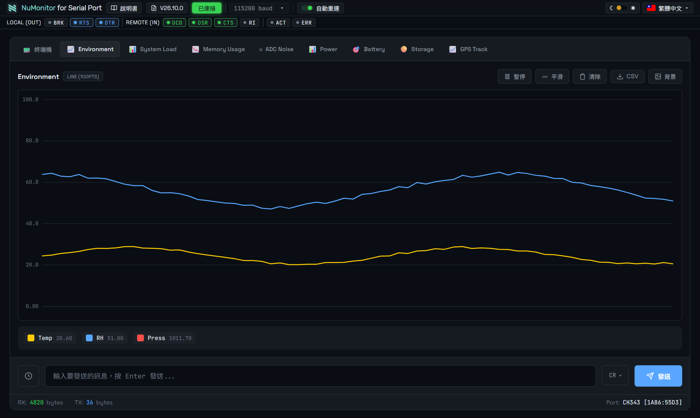
自動數據解析
NuMonitor 會自動解析 Serial 輸出的數據並繪製圖表。當您的 Arduino 輸出符合特定格式的數據時，會自動出現對應的圖表分頁。
圖表控制按鈕
| 按鈕 | 功能 |
|---|---|
| 暫停 / 繼續 | 暫停或繼續更新圖表 |
| 平滑 | 啟用/停用曲線平滑功能（僅限折線圖、面積圖） |
| 清除 | 清空圖表所有數據 |
| CSV | 匯出數據為 CSV 檔案 |
| 背景 | 自訂圖表背景顏色 |
| 地圖 | 切換到地圖視圖（僅限有 GPS 數據時） |
X 軸遊標功能
在折線圖、面積圖、堆疊圖上移動滑鼠，會顯示垂直遊標線和該位置的所有數值。如果數據包含計數器 (#counter)，還會顯示對應的計數器編號。
滾輪調整顯示點數
在圖表區域使用滑鼠滾輪可調整顯示的數據點數量（20-2000 點），方便查看不同時間範圍的數據。
圖例互動
- 點擊圖例項目：顯示/隱藏該數據線
- 右鍵點擊圖例項目：開啟顏色選擇器，自訂該數據線的顏色
📊 圖表類型
line 折線圖 — 連續時序數據，支援平滑曲線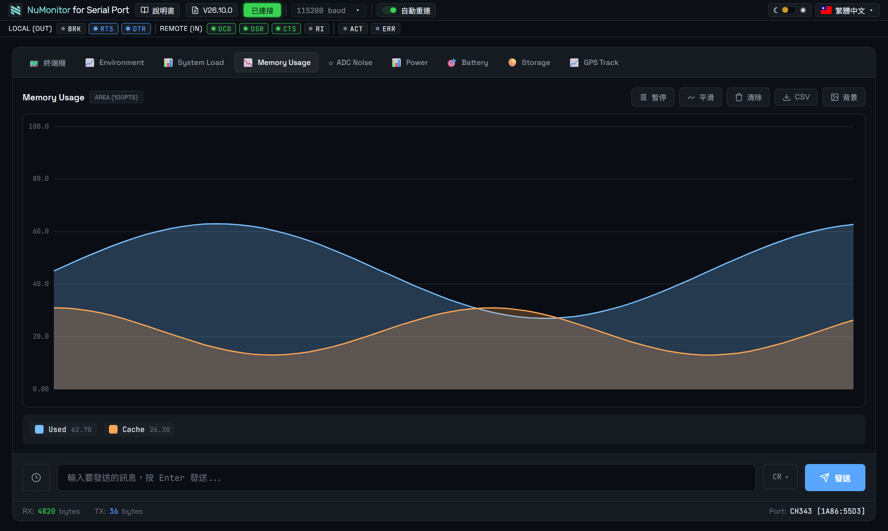
area 面積圖 — 半透明填充，強調量體變化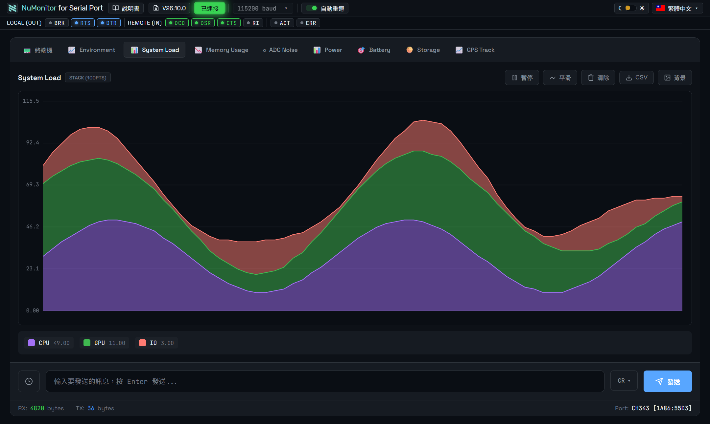
stack 堆疊面積圖 — 看組成比例隨時間的變化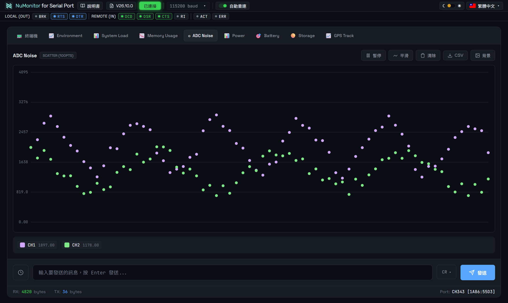
scatter 散點圖 — 觀察數據分布與跳動，適合看雜訊與離群值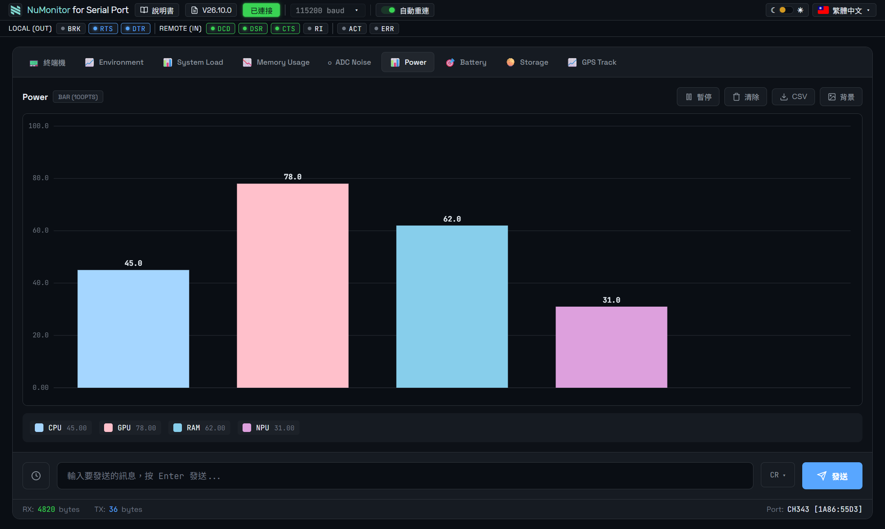
bar 長條圖 — 比較多個類別的當前值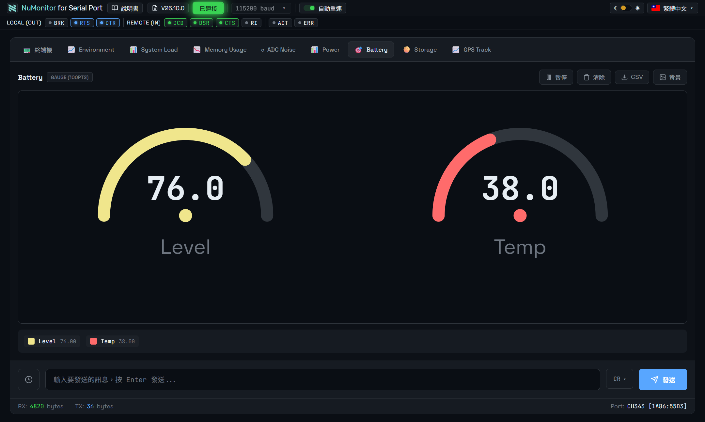
gauge 儀表圖 — 單一數值監控，多個數值自動排成網格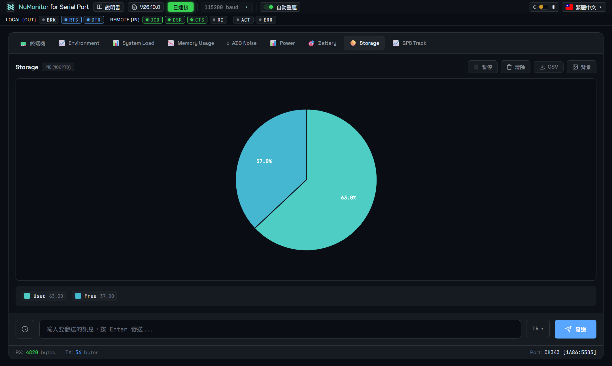
pie 圓餅圖 — 比例分配，2～8 個類別最好讀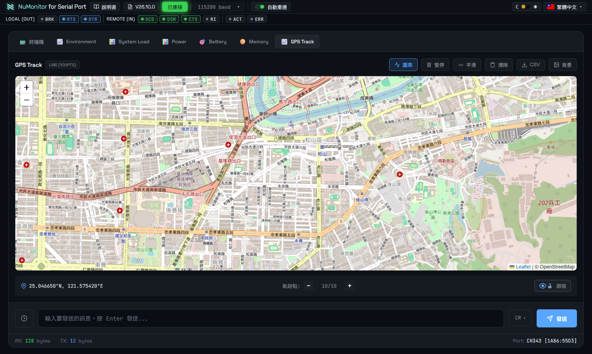
map: 時多出來的切換視圖折線圖 (line)
最常用的圖表類型，適合顯示連續變化的數據，如溫度、電壓等。
{Temperature|0|100|line}Temp:25.5°C
面積圖 (area)
類似折線圖，但填充線條下方區域，適合強調數量變化。
{Network|0|100|area}RX:75.5 TX:25.3
堆疊面積圖 (stack)
多個數據系列堆疊顯示，Y 軸為累計值，適合顯示組成比例。
{Power|0|200|stack}WiFi:80 BLE:25 LCD:45
柱狀圖 (bar)
適合比較不同類別的數值，如多個感測器的讀數。
{Sensors|0|100|bar}S1:20 S2:40 S3:80
散點圖 (scatter)
顯示數據點的分布，適合 XY 座標數據或 Lissajous 曲線。
{Lissajous|0|100|scatter}X:50.5 Y:75.3
圓餅圖 (pie)
顯示各部分佔總量的比例，適合記憶體分配等場景。
{Memory|auto|auto|pie}Heap:48KB Stack:16KB Free:36KB
儀表圖 (gauge)
以儀表盤形式顯示數值，適合電壓、電流等單一數值監控。
{Battery|0|4.2|gauge}Voltage:4.05V
🗺️ GPS 地圖軌跡
啟用地圖功能
當數據中包含 map:lat,lng 格式的座標時，圖表會自動顯示「地圖」按鈕。點擊按鈕可切換到地圖視圖。
座標格式
支援多種座標格式：
| 格式 | 範例 |
|---|---|
| 十進位度 (DD) | map:25.039684,121.512357 |
| 帶方向的 DD | map:25.039684N,121.512357E |
| 度分 (DM) | map:25°2.381'N,121°30.741'E |
| 度分秒 (DMS) | map:25°2'22.9"N,121°30'44.5"E |
地圖控制
| 功能 | 操作 |
|---|---|
| 縮放 | 滑鼠滾輪 或 點擊 +/- 按鈕 |
| 平移 | 拖曳地圖 |
| 軌跡點數 | 使用狀態欄的 −/+ 按鈕調整 (1-100) |
| 視界鎖定 | 點擊眼睛+鎖按鈕切換跟隨/鎖定模式 |
軌跡點資訊
滑鼠移到軌跡點上會顯示 tooltip，包含：
- 計數器編號
- 經緯度座標
- 其他數據（如航速、高度等，保留原始單位）
最新的位置會以紅色標記顯示，歷史位置以藍色顯示。軌跡線會連接所有點。
📝 數據格式規格
完整格式
{GroupName|min|max|type}#counter Key1:Value1 Key2:Value2 map:lat,lng格式元素說明
| 元素 | 必要性 | 說明 |
|---|---|---|
{GroupName|min|max|type} |
選擇性 | 群組設定：名稱、Y軸範圍、圖表類型 |
#counter |
選擇性 | 計數器，用於 X 軸遊標顯示 |
Key:Value |
必要 | 數據點，Value 可包含單位 |
map:lat,lng |
選擇性 | GPS 座標，啟用地圖功能 |
圖表類型代碼
| 代碼 | 圖表類型 |
|---|---|
line | 折線圖 |
area | 面積圖 |
stack | 堆疊面積圖 |
bar | 柱狀圖 |
scatter | 散點圖 |
pie | 圓餅圖 |
gauge | 儀表圖 |
Y 軸範圍設定
auto- 自動調整範圍- 數字 - 固定範圍，如
0|100表示 0~100
範例程式碼
// 基本折線圖
Serial.println("{Temperature|0|50|line}Temp:25.5°C Humidity:60.2%");
// 帶計數器的折線圖
Serial.print("{Sensors|0|100|line}#");
Serial.print(counter);
Serial.println(" S1:45 S2:67 S3:82");
// GPS 軌跡
Serial.print("{Drone|0|100|line}#");
Serial.print(counter);
Serial.print(" Speed:40.5km/h Alt:85.3m map:");
Serial.print(lat, 6);
Serial.print(",");
Serial.println(lng, 6);
// 堆疊圖
Serial.println("{Power|0|200|stack}WiFi:80mA BLE:25mA LCD:45mA");
// 簡單格式（自動命名）
Serial.println("25.5 60.2 1013.2");⌨️ 快捷鍵
| 快捷鍵 | 功能 |
|---|---|
| Ctrl + L | 清除終端機 |
| Ctrl + Enter | 傳送指令 |
| ↑ / ↓ | 瀏覽指令歷史（在輸入框中） |
| Esc | 清空輸入框 |
❓ 常見問題
Q: 為什麼看不到連接埠？
A: 請確認：
- 裝置已正確連接到電腦
- 已安裝對應的 USB 驅動程式
- 使用的是 Chrome、Edge 或 Opera 瀏覽器
- 沒有其他程式佔用該連接埠（如 Arduino IDE）
Q: 為什麼收到的是亂碼？
A: 鮑率設定不正確。請確認 NuMonitor 的鮑率與 Arduino 程式中 Serial.begin() 的設定一致。
Q: 為什麼圖表沒有出現？
A: 請確認數據格式正確：
- 至少包含一個
Key:Value格式的數據 - 數值必須是有效的數字
- 群組設定格式正確（如果有使用的話）
Q: ESP32 連接不穩定？
A: ESP32 USB CDC 裝置可能需要在每次連接時重新選擇連接埠。這是 USB 實作的限制，NuMonitor 已針對此問題進行優化。
Q: 接數據機（modem），送 AT 指令完全沒有回應？
A: 依序檢查：
- 行結尾要選 CR——這是最常見的原因。AT 指令必須以回車結尾，送成預設的 LF 數據機不會有任何反應
- 把 DTR 點亮（必要時連 RTS 一起）——多數數據機要 DTR 為高才接受命令；其他終端軟體開埠時預設就會拉高，NuMonitor 為了避免重置開發板刻意不自動設定
- 看 DSR 與 CTS 燈——DSR 不亮代表對方沒電或線沒接好；CTS 不亮代表對方不允許你送資料
- 確認鮑率與數據機設定一致
- 打開回顯並觀察底部的 TX bytes，確認資料真的送出去了
Q: 自動重連跟自動連線有什麼差別？
A: 是同一個開關控制的兩件事：
- 連線中裝置被拔掉 → 每秒重試，直到插回來為止（無時間限制）
- 重新整理或重新開啟頁面 → 若上次那顆連接埠還在，自動接回去並還原鮑率
但如果你上次是自己按「斷開」離開的，重新整理後不會自作主張接回去。開關本身的狀態也會被記住。
Q: 怎麼切換深色／淺色主題？
A: 點擊右上角的月亮／太陽切換開關，設定會自動記住。圖表與終端機配色都會跟著切換。
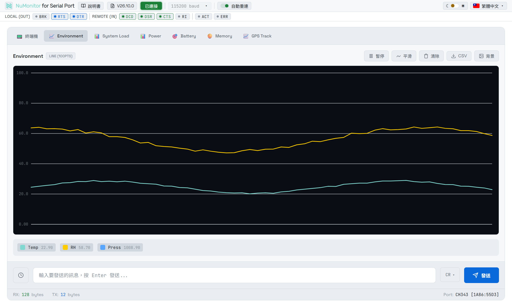
Q: 如何匯出數據？
A: 點擊圖表上方的「CSV」按鈕，即可將該圖表的數據匯出為 CSV 檔案。
Q: 如何改變介面語言？
A: 點擊右上角的語言選擇器，選擇您偏好的語言。設定會自動儲存，下次開啟仍是同一個語言。
「說明書」與版本徽章也會跟著介面語言走。除了本頁的繁體中文，說明書與變更記錄另有 English、日本語、Tiếng Việt、Bahasa Indonesia、Bahasa Melayu 五種版本；介面切成尚未翻譯的語言時，會開到英文版並在頁面上說明原因。
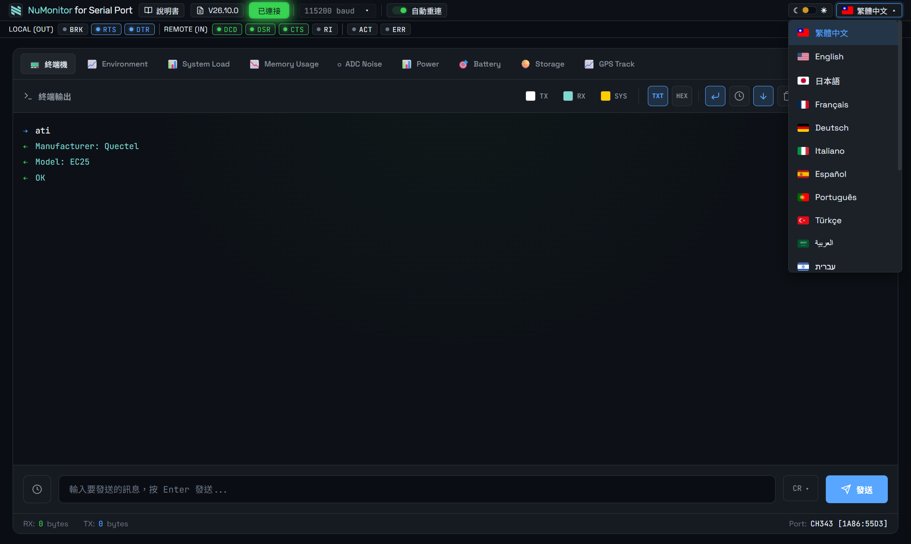